6.2. Calcolo della dispersione in pandas#
6.2.1. Indici di dispersione#
Gli oggetti di tipo serie messi a disposizione da pandas permettono di calcolare facilmente i principali indici di dispersione. Importiamo, come al solito, il nostro dataset e impostiamo lo stile per i grafici.
import numpy as np
import pandas as pd
import matplotlib.pyplot as plt
from scipy.constants import golden
plt.style.use('sds.mplstyle')
heroes = pd.read_csv('data/heroes.csv', sep=';', index_col=0)
Gli indici di dispersione di un oggetto di tipo serie si calcolano invocando su quest'ultimo degli appositi metodi. In particolare:
varrestiuisce la varianza campionaria;
year = heroes['First appearance']
year.var()
388.76870505203914
stdrestituisce la deviazione standard campionaria;
year.std()
19.717218491766
describecalcola i principali indici descrittivi di centralità e dispersione (quelli relativi a media, deviazione standard, minimo, primo quartile, mediana, terzo quartile e massimo), unitamente al numero di osservazioni nella serie, che utilizza per popolare un nuovo oggetto di tipo serie;
year.describe()
count 367.000000
mean 1979.855586
std 19.717218
min 1933.000000
25% 1965.000000
50% 1979.000000
75% 1994.000000
max 2099.000000
Name: First appearance, dtype: float64
quantilerestituisce il quantile corrispondente al livello specificato come argomento.
year.quantile(.15)
1963.0
Va sottolineato come l'eventuale calcolo di percentili, quartili o decili
campionari deve essere fatto utilizzando opportunamente il metodo quantile,
tenendo conto delle ovvie relazioni tra l'indice che si vuole calcolare e il
corrispondente quantile. Per esempio, il \(35\)-esimo percentile si otterrà
invocando quantile(.35), così come il terzo quartile verrà restituito
invocando quantile(.75) (sebbene in quest'ultimo caso si possa utilizzare
anche il metodo describe introdotto nel punto precedente.
6.2.2. Box plot#
Un box plot (o box and whiskers plot, o ancora un diagramma a scatola) è una rappresentazione grafica che riassume le principali caratteristiche di un campione di dati. Tale rappresentazione contiene due componenti principali:
una scatola, intesa come un rettangolo che evidenzia il primo e il terzo quartile campionario dei dati, che corrispondono alle due basi, e la mediana, indicata tramite un segmento parallelo alle basi stesse;
due baffi, che si estendono dagli estremi della scatola fino a raggiungere il minimo e il massimo valore osservato.
A titolo di esempio la cella seguente visualizza il box plot relativo all'anno di prima apparizione.
year.plot.box(whis=20)
plt.show()
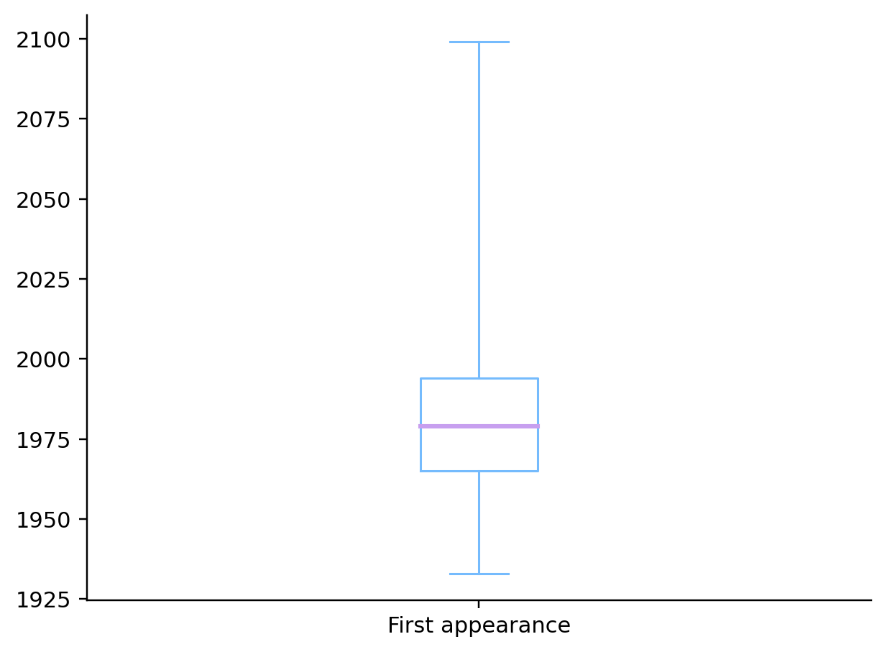
Si verifica visualmente come questo grafico metta in evidenza:
la centralità delle osservazioni, tramite il segmento che individua la mediana campionaria;
la loro dispersione, sia in termini di range interquartile (l'altezza della scatola) e di intervallo di variazione dei dati (la distanza tra gli estremi dei baffi).
Vale la pena sottolineare che la presenza di eventuali valori mancanti non
influisce sulla generazione del grafico. È inoltre stato necessario
specificare l'argomento opzionale whis (abbreviazione di whiskers). In
caso contrario viene visualizzata una versione leggermente diversa di box
plot, in cui le osservazioni vengono preliminarmente analizzate in modo da
evidenziare eventuali outlier marcandoli con dei cerchi.
year.plot.box()
plt.show()
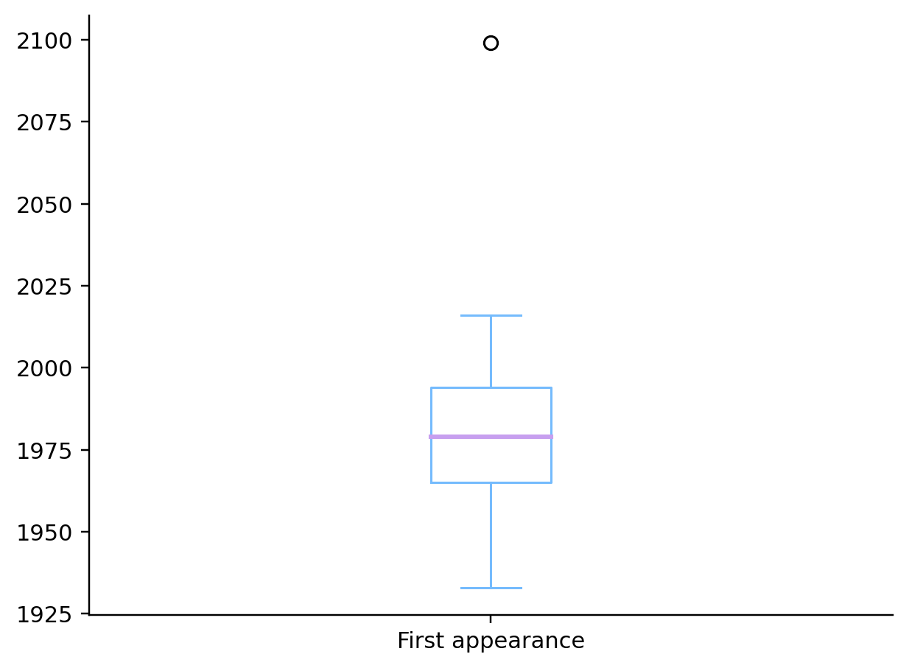
Sebbene i box plot che abbiamo ottenuto fossero visualizzati in un sistema di
riferimento bidimensionale, le informazioni salienti venivano tutte reperite
leggendo l'asse delle ordinate. Specificando l'argomento opzionale vert è
possibile ottenere un diagramma equivalente visualizzando le informazioni
sull'asse delle ascisse. In questo caso i valori per i quartili si leggeranno
ovviamente in corrispondenza di segmenti paralleli alle altezze della scatola.
year.plot.box(vert=False)
plt.show()
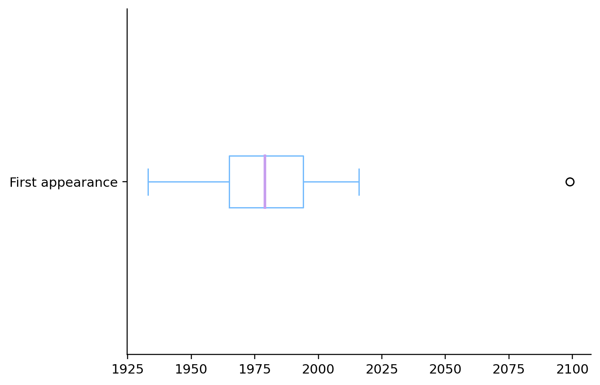
6.2.3. Diagrammi Q-Q#
Un diagramma Q-Q (o diagramma quantile-quantile) è una rappresentazione grafica che considera due campioni al fine di valutare la validità dell'ipotesi che i campioni stessi seguano una medesima distribuzione. Questi diagrammi si basano sul fatto (che non dimostreremo) che i quantili campionari rappresentano l'approssimazione di quantili teorici che, considerati tutti insieme, individuano univocamente la distribuzione dei dati.
Pertanto, se due campioni hanno un'uguale distribuzione, allora estraendo da entrambi il quantile di un livello fissato si dovranno ottenere due numeri molto vicini (in quanto essi rappresentano approssimazioni diverse di uno stesso valore).
Se consideriamo per esempio le altezze di due campioni di supereroi Marvel e DC, escludendo eventuali outlier (limitando per la precisione la scelta a valori compresi tra 150 e 200 centimetri), i corrispondenti quantili di livello \(0.2\) assumeranno i seguenti valori.
marvel = heroes.loc[(heroes['Publisher']=='Marvel Comics') & \
(heroes['Height'].between(150, 200))]
dc = heroes.loc[(heroes['Publisher']=='DC Comics') & \
(heroes['Height'].between(150, 200))]
marvel_sample = marvel['Height'].sample(120)
dc_sample = dc['Height'].sample(120)
(marvel_sample.quantile(.2), dc_sample.quantile(.2))
(169.96200000000002, 170.456)
Per ottenere il diagramma Q-Q ripetiamo ora questa operazione facendo variare i livelli in una discretizzazione che copra ragionevolmente l'intervallo \([0, 1]\) e visualizziamo sul piano cartesiano un punto per ogni coppia di quantili campionari che si riferiscono a uno stesso livello.
levels = np.linspace(0, 1, 100)
plt.plot(marvel_sample.quantile(levels),
dc_sample.quantile(levels),
'o')
plt.show()
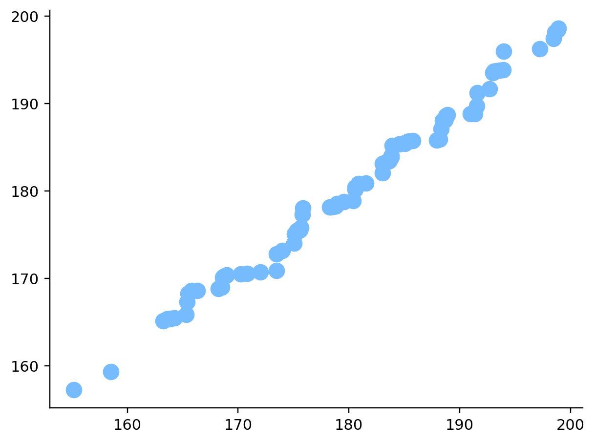
Il fatto che in ogni coppia considerata i due quantili fossero molto simili tra loro fa sì che i punti ottenuti si allineino approssimativamente sulla bisettrice del primo e del terzo quadrante. Possiamo evidenziare tale fatto sovrapponendo al diagramma il grafico della retta.
plt.plot([min(dc_sample), max(dc_sample)],
[min(dc_sample), max(dc_sample)])
plt.plot(dc_sample.quantile(levels),
marvel_sample.quantile(levels),
'o')
plt.show()
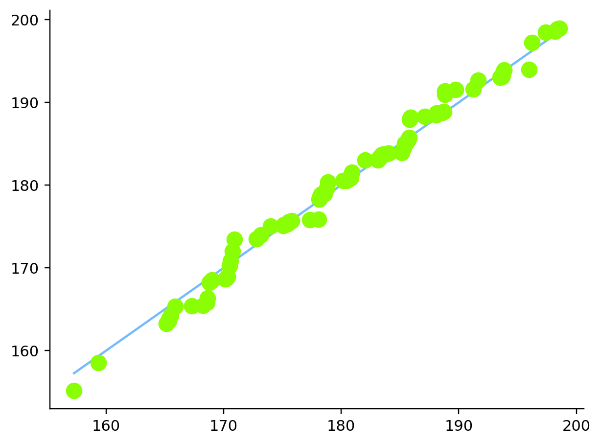
In realtà non è necessario costruire "a mano" i diagrammi Q-Q: il package
statmodels mette a disposizione un oggetto api su cui invocare il metodo
qqplot_2samples a cui passare direttamente i due campioni, aggiungendo
l'argomento opzionale line='45' nel caso in cui si vuole tracciare anche
il riferimento della bisettrice.
import statsmodels.api as sm
sm.qqplot_2samples(marvel_sample, dc_sample, line='45')
plt.show()
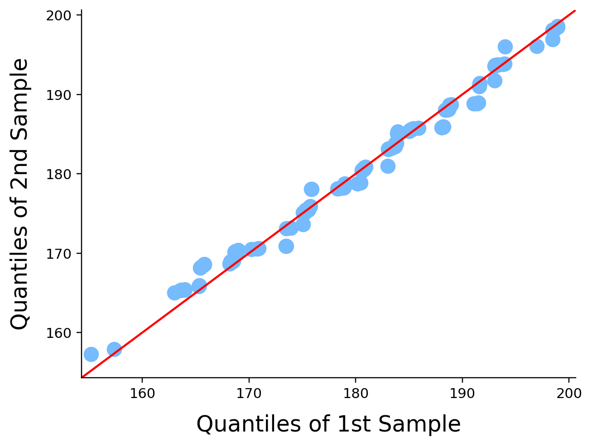
In sintesi, il diagramma ottenuto ci permette di avvalorare l'ipotesi che l'altezza dei supereroi non segua una distribuzione diversa nei fumetti editi da DC e Marvel.
Chiaramente, non è detto che due campioni seguano necessariamente una medesima distribuzione. In tal caso, i punti ottenuti non si disporranno vicino alla bisettrice. È questo il caso della distribuzione del peso tra supereroine e supereroi.
female = heroes.loc[(heroes['Gender']=='F') & \
(heroes['Weight'].between(50, 100))]
male = heroes.loc[(heroes['Gender']=='M') & \
(heroes['Weight'].between(50, 100))]
female_sample = female['Weight'].sample(100)
male_sample = male['Weight'].sample(100)
sm.qqplot_2samples(female_sample, male_sample, line='45')
plt.show()
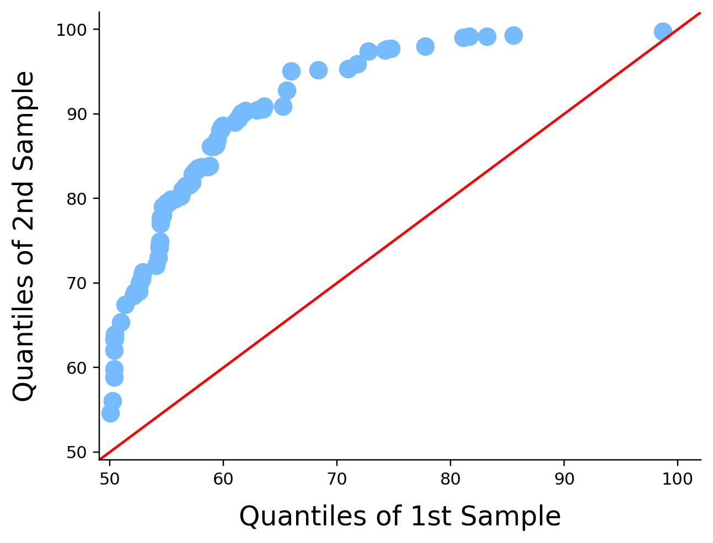
La tecnica del Q-Q plot permette quindi in casi come questo di confutare l'ipotesi di partenza.
Si nota infine che una standardizzazione dei dati permette di confinare il grafico ottenuto in prossimità dell'origine. In tal modo diventa più facile accorgersi di eventuali valori fuori scala.
sm.qqplot_2samples((marvel_sample-marvel_sample.mean())/marvel_sample.std(),
(dc_sample-dc_sample.mean())/dc_sample.std(),
line='s',
xlabel='DC', ylabel='Marvel')
plt.show()
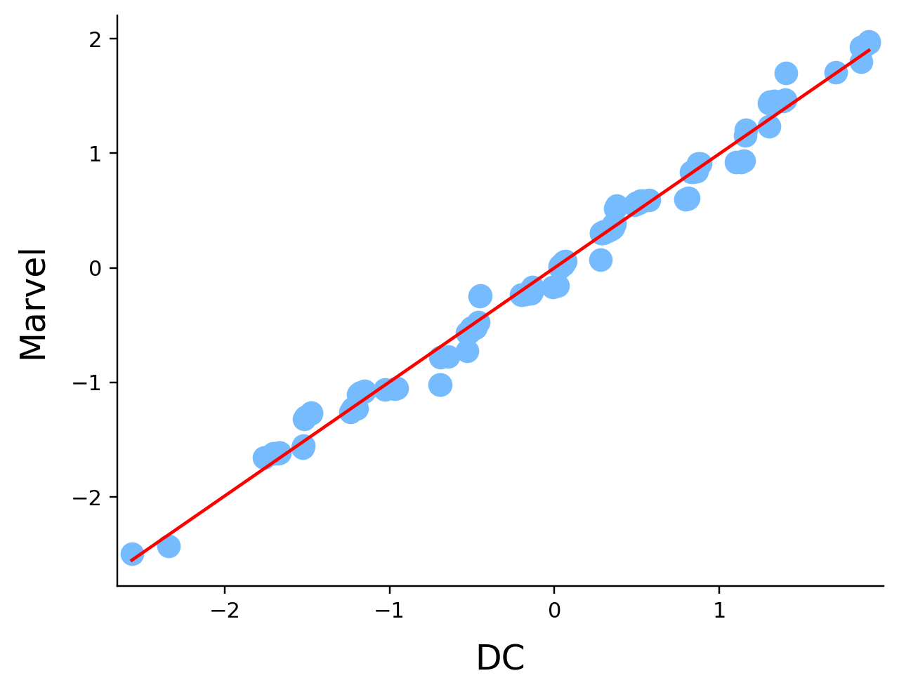
sm.qqplot_2samples((female_sample-female_sample.mean())/female_sample.std(),
(male_sample-male_sample.mean())/male_sample.std(),
line='45',
xlabel='Male', ylabel='Female')
plt.show()
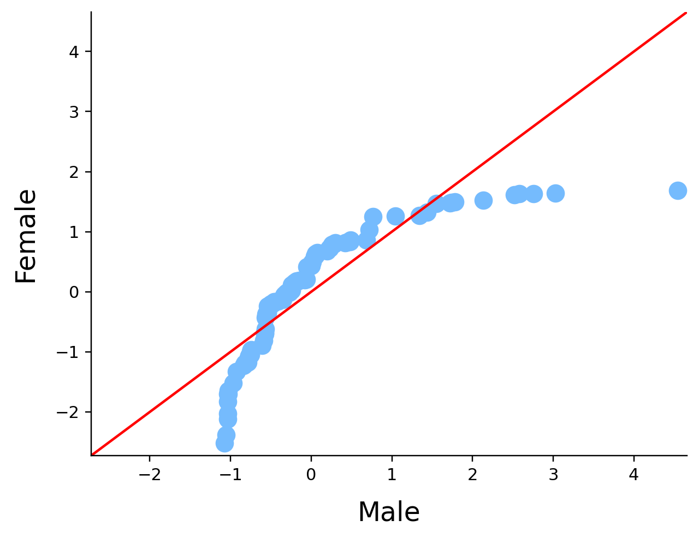
6.2.4. Simmetria, distribuzioni approssimativamente normali e regola empirica#
Alcuni dei grafici finora visti possono essere utili per mettere in evidenza una proprietà interessante di un campione di dati legata alla simmetria delle corrispondenti frequenze. Quando le frequenze, visualizzate a seconda dei casi tramite un grafico a barre o un istogramma, tendono a distribuirsi in modo simmetrico rispetto al valore della media campionaria si dice che il campione segue una distribuzione approssimativamente simmetrica. Il grafico qui sotto affianca l'istogramma e il box plot di un siffatto campione. La simmetria è visibile in entrambe le rappresentazioni: l'istogramma è approssimativamente simmetrico rispetto alla sua parte centrale e nel box plot i baffi hanno all'incirca la stessa lunghezza, così come la mediana si posiziona verso il centro della scatola.
from scipy.stats import norm
sample = pd.Series(norm.rvs(24, 2, size=1000), name='')
f, (h, b) = plt.subplots(2, 1, gridspec_kw = {'height_ratios':[4, 3]})
f.set_figheight(6)
h.yaxis.label.set_visible(False)
sample.plot.hist(bins=20, ax=h)
sample.plot.box(vert=False, whis=20, ax=b, widths=.4, label=None)
plt.show()
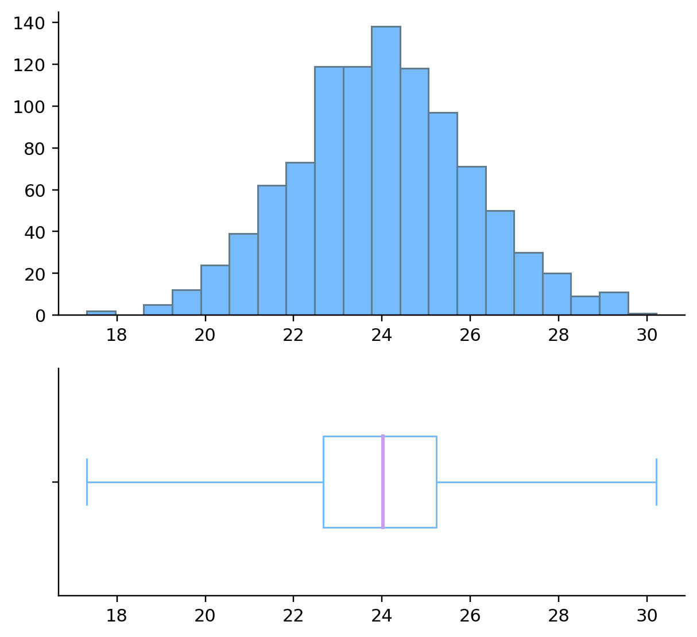
L'asimmetria in una distribuzione si può invece presentare in due diverse modalità:
tende a essere presente una "coda" nella parte destra della distribuzione delle frequenze, evidenziata da valori più bassi delle frequenze nella parte destra dell'istogramma e da un baffo destro sensibilmente più lungo nel box plot, come esemplificato nella coppia di diagrammi qui sotto; in questo caso si parla quindi di distribuzione asimmetrica a destra (utilizzando a volte la terminologia inglese e dicendo che è presente uno skew a destra);
from scipy.stats import gamma
sample = pd.Series(gamma.rvs(2, size=1000), name='')
f, (h, b) = plt.subplots(2, 1, gridspec_kw = {'height_ratios':[4, 3]})
f.set_figheight(6)
h.yaxis.label.set_visible(False)
sample.plot.hist(bins=20, ax=h)
sample.plot.box(vert=False, whis=20, ax=b, widths=.4)
plt.show()
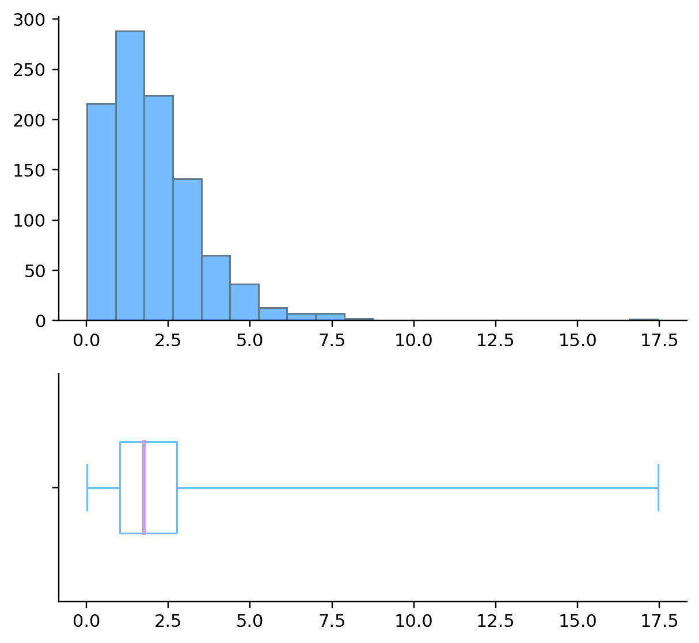
viceversa, è possibile che la coda della distribuzione sia a sinistra, come nel grafico sottostante, e quindi si parla di asimmetria (o skew) a sinistra.
from scipy.stats import beta
sample = pd.Series(beta.rvs(20, 2, size=1000), name='')
f, (h, b) = plt.subplots(2, 1, gridspec_kw = {'height_ratios':[4, 3]})
f.set_figheight(6)
h.yaxis.label.set_visible(False)
sample.plot.hist(bins=20, ax=h)
sample.plot.box(vert=False, whis=20, ax=b, widths=.4)
plt.show()
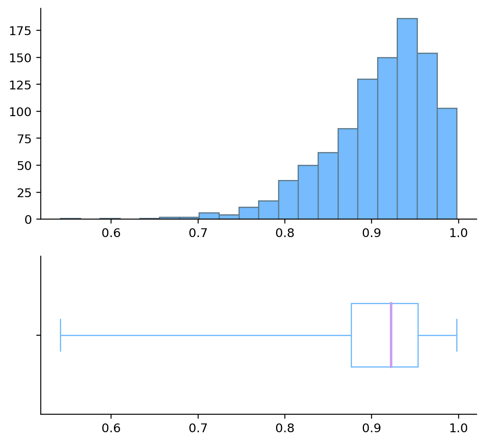
Consideriamo per esempio il BMI dei supereroi nei soli casi in cui il relativo valore è inferiore a \(100\), e visualizziamo separatamente i corrispondenti istogramma e box plot.
sample = heroes['Weight'] / (heroes['Height']/100) **2
sample = sample[sample < 100]
sample.name = 'BMI'
sample.plot.hist(bins=20)
plt.ylabel('')
plt.show()
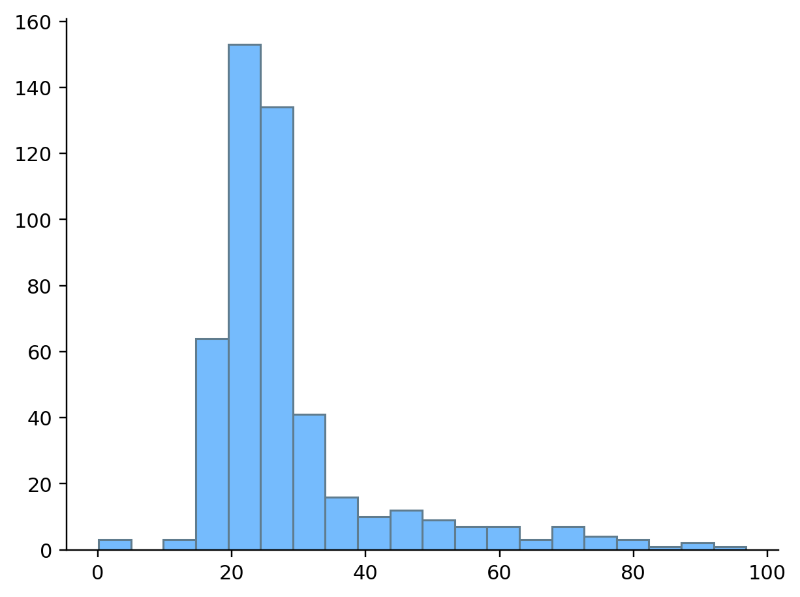
sample.plot.box(vert=False, whis=200, widths=.4)
plt.show()
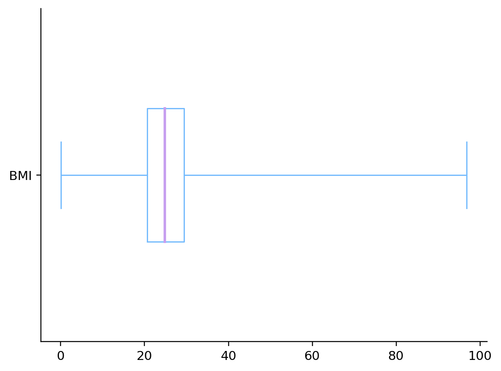
Si vede chiaramente la presenza di un'asimmetria a destra. Se invece consideriamo l'altezza, restringendosi ai casi in cui il corrispondente valore è compreso tra \(150\) e \(220\), otteniamo una distribuzione approssimativamente simmetrica.
sample = heroes[(heroes['Height'].between(150, 220))]['Height']
sample.plot.hist(bins=20)
plt.ylabel('')
plt.show()
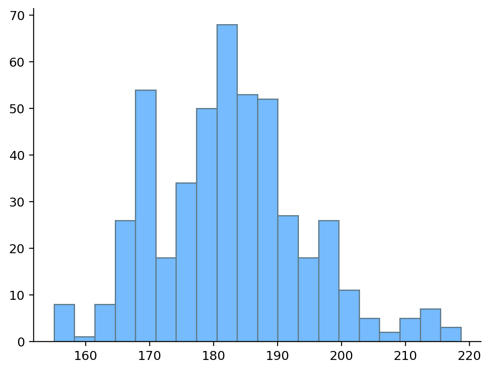
sample.plot.box(vert=False, whis=20, widths=.4)
plt.show()
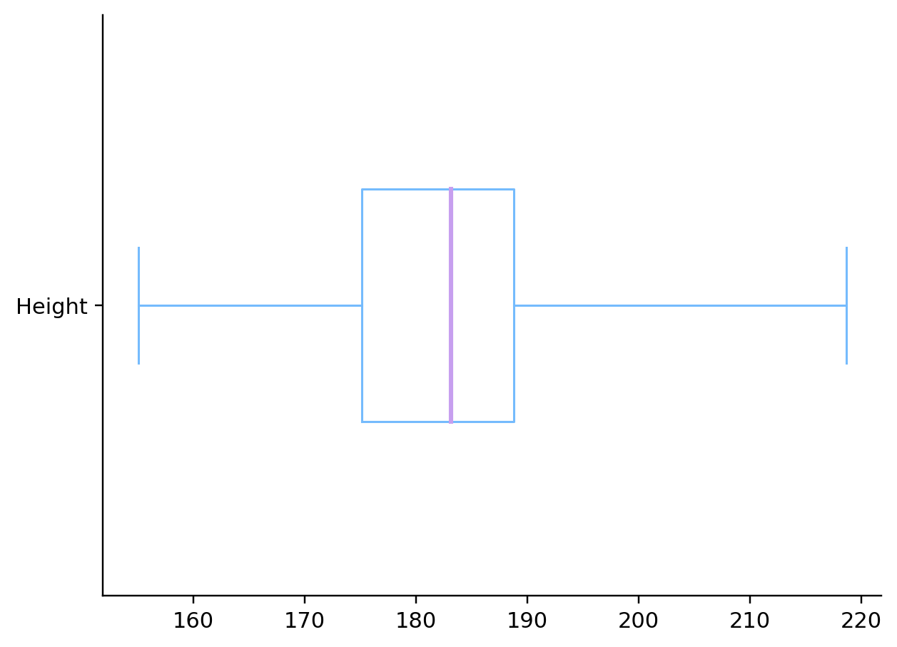
Tra le distribuzioni approssimativamente simmetriche, un ruolo particolare spetta alle cosiddette distribuzioni approssimativamente normali, in cui la simmetria è accompagnata da una forma "a campana" del grafico delle frequenze. In questo tipo di distribuzioni i dati si concentrano attorno alla media campionaria secondo la seguente regola empirica:
approssimativamente il 68% delle osservazioni dista dalla media campionaria non più di una deviazione standard campionaria;
approssimativamente il 95% delle osservazioni dista dalla media campionaria non più di due deviazioni standard campionarie;
approssimativamente il 99.7% delle osservazioni dista dalla media campionaria non più di tre deviazioni standard campionarie.
Siccome il grafico delle frequenze dell'altezza ha approssimativamente un andamento a campana, possiamo controllare numericamente se questa regola empirica risulti verificata.
def check_empirical_rule(n):
within = len(sample[np.abs(sample - sample.mean()) < n*sample.std()])
return within / len(sample)
pd.DataFrame([check_empirical_rule(n) for n in range(1, 4)], columns=['%'],
index=range(1, 4))
| % | |
|---|---|
| 1 | 0.672269 |
| 2 | 0.947479 |
| 3 | 0.993697 |
I risultati ottenuti sono altamente in accordo con le percentuali sopra indicate, e quindi l'ipotesi iniziale che le altezze considerate fossero distribuite in modo approssimativamente normale risulta validata.
6.2.5. Una nota sulla produzione dei grafici *#
I lettori più curiosi si saranno probabilmente chiesti come mai gli esempi
riportati all'inizio del paragrafo precedente affiancassero istogrammi e box
plot, mentre quando è stato mostrato come analizzare lo stato di simmetria
della distribuzione di un campione questi due grafici sono stati costruiti
separatamente. Ciò è dovuto al fatto che l'utilizzo di subplot permette di
creare più grafici in una stessa figura, con il vincolo che le loro
dimensioni devono essere uguali. Questo avrebbe avuto come effetto quello di
ottenere un istogramma con delle barre molto basse, o in alternativa un box
plot con un'altezza troppo elevata. In entrambi i casi si sarebbe quindi
generato un grafico non particolarmente agevole da leggere. Una soluzione a
questo problema, non introdotta prima per non complicare inutilmente la
spiegazione, consiste nell'utilizzare come nella cella seguente il metodo
plt.subplots.
f, (h, b) = plt.subplots(2, 1, gridspec_kw = {'height_ratios':[4, 3]})
f.set_figheight(6)
h.yaxis.label.set_visible(False)
sample.plot.hist(bins=20, ax=h)
sample.plot.box(vert=False, whis=20, ax=b, widths=.4)
plt.show()
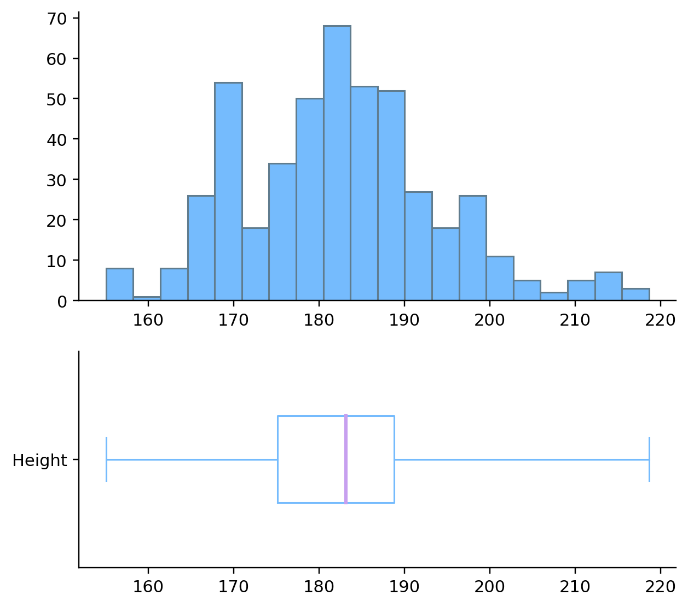
Vediamo nell'ordine quali sono i punti interessanti nel codice che ha prodotto questo grafico:
il metodo
plt.subplotsaccetta due argomenti il cui significato è lo stesso di quelli diplt.subplot: pertanto nella prima riga si genera una figura con due righe, ognuna contenente un asse;lo stesso metodo restituisce dei riferimenti alla figura e ai due assi;
l'argomento opzionale
gridspec_kwpermette di specificare un dizionario con informazioni addizionali: nel nostro caso le altezze relative dei due assi;usando il riferimento alla figura è possibile invocare il metodo
set_figheightal fine di impostare l'altezza globale della figura;analogamente, tramite il riferimento agli assi è possibile disattivare la visualizzazione dell'etichetta sull'asse delle ascisse dell'istogramma (tale etichetta conterrebbe il testo
'Frequency', dunque non sarebbe particolarmente informativa);l'invocazione dei metodi
histeboxviene fatta specificando per l'argomento opzionaleaxi riferimenti agli assi restituiti daplt.subplots;infine, nella creazione del box plot viene specificato un valore per l'argomento opzionale
widthche permette di ottenere un grafico in cui la scatola ha un'altezza più alta di quella predefinita, al fine di migliorare la leggibilità del risultato.